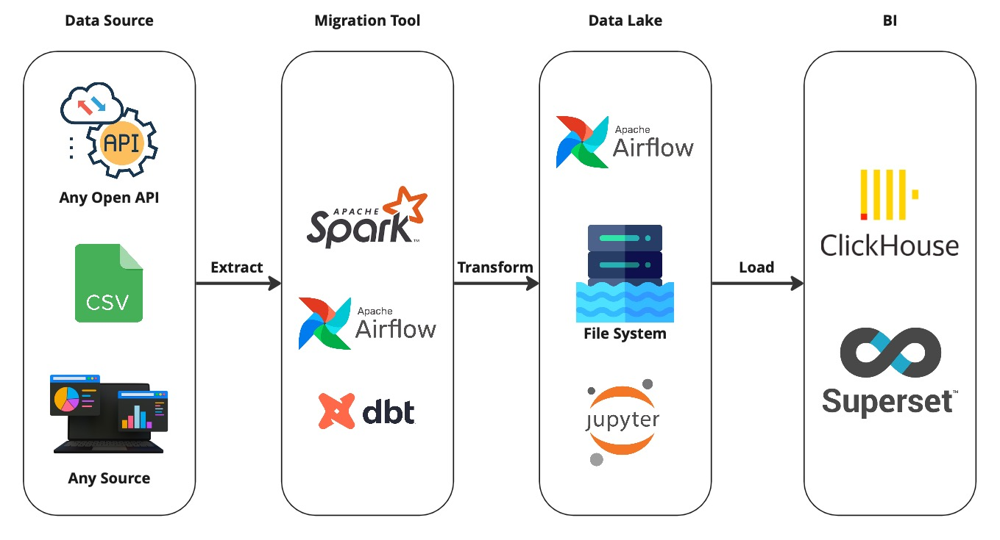
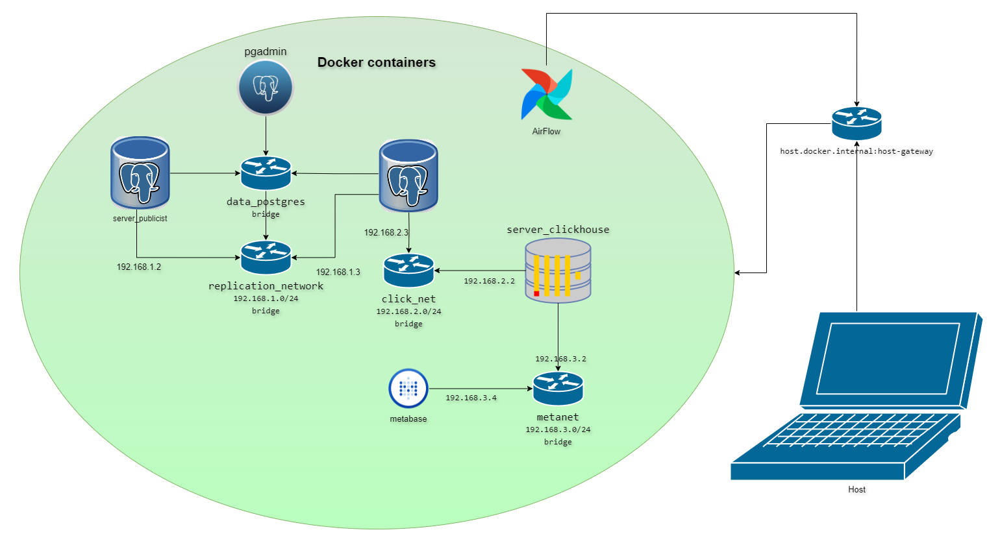
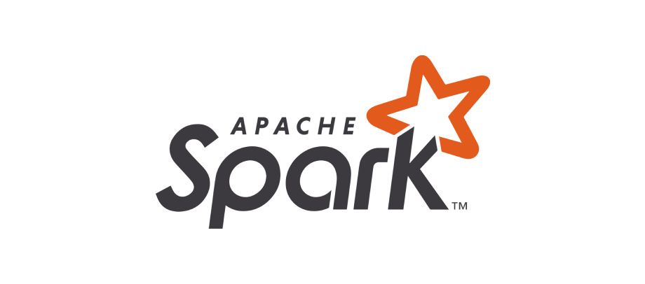

Pet Project
Содержание страницы
Проекты
Проект №0 - Sandbox DB
Песочница для Дата Инженера ➜ Sandbox DB
Проект №1 - HalltapeETLPipeline

Важно! Этот проект был таким не сразу. Первые его версии содержали только Airflow, Clickhouse и Pandas под капотом. Поэтому не думайте, что я сразу был суперменом. Все добавлялось и допиливалось уже позже. Но база была та же.
Любой пет проект ты можешь собрать, как с нуля, так и взять готовый шаблон по типу моего. В проекте ниже есть минимальный набор необходимых инструментов. Твоя задача – настроить ETL процесс. Данные можно, как сгенерировать свои, так и скачать по API или с любого другого ресурса. Ограничение только твоя фантазия. Этот проект больше, как шаблон. То, как выстроить весь процесс работы с данными – твоя задача.
Вот, что там уже есть: - Генерация синтетических данных - Построение простой витрины данных на Spark - Мониторинг качества данных - dbt модель для витрины данных в Clickhouse - dbt модель для качества данных в Clickhouse
Для сборки проекта тебе понадобятся знания Git, Docker
Собери его у себя ➜ Pet Project HalltapeETLPipeline
Проект №2 - spacex-api-analize
По всем вопросам по данному проекту можно обращаться к Шустикову Владимиру в телеграмм канале – Инженерообязанный

Задачами проекта является настройка ETL-процесса по загрузке данных из API в базу данных, настройка сетей и логической репликации данных, автоматизация создания аналитических запросов поверх сырых данных и визуальное представление результатов на дашборде.
Здесь вы можете получить следующие знания:
- Выгрузка данных из API на AirFlow
- Работа с ООП
- Настройка сетей, а именно IP-адресации
- Логическая репликация в PostgreSQL
- Работа с внешними источниками в Clickhouse на основе движка PostgreSQL
- Построение моделей, тестов и макросов в DBT
Для сборки проекта тебе понадобятся знания Git, Docker
Собери его у себя ➜ Обработка данных SpaceX AP
Проект №3 - Create mart in PySpark
По всем вопросам по данному проекту можно обращаться к Шустикову Владимиру в телеграмм канале – Инженерообязанный
Задачей данного проекта была сгенерировать сырые данные и на их основе построить несколько витрин данных. Более подробно с заданием проекта можно ознакомиться здесь.

В этом проекты вы можете получить следующие знания:
- программирования на Python
- работа с Google Disk через код
- написание кода на PySpark
Собери его у себя
Проект состоит из двух блокнотов:
1) генерация файлов в Google Disk 2) создание витрин данных
Для сборки проекта тебе понадобятся стабильный интернет и Google аккаунт. Вся инструкция по запуску описана в блокнотах.
Проект №4 - От почтового сервера до Greenplum
По всем вопросам по данному проекту можно обращаться к Кузьмину Дмитрию в телеграмм канале – Дмитрий Кузьмин. Инженерия данных
Открытые API для проектов
- Launch Library 2 - Запуски ракет, космические события и космические полеты с экипажем.
- SpaceX API - Информация о компании SpaceX.
- Wikimedia - Дампы данных о посмотрах страниц в Википедии в текстовом виде.